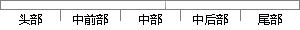

{0,1-e^(-(qar+qtr-β)/β)}
片段位置图

相似结果|
相似片段 1：‘+E1)=pV(f,(1一E)I‘+占，)+(1一p)UU‘，(1-E)I++el，(1-E)I‘+E1)，ESS。)，X∈【0，1)上的GIS。S、GIS与文献【18】已经讨论了多人纯博弈的ESS
相似片段 2：’/N01.C’ ;4O>< P0-* -*, 1,B’-0J,’()*’@+,-.)/.-,01 ;234< H >*)’,?+ Q,J,1-D@E0R )’-0,1-E P0-* 234@1,B
|
※ 片段修改建议 ※
近似词参考：